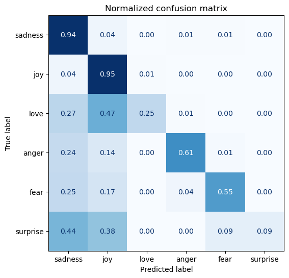

Load Dataset
Contents
import pandas as pd
import matplotlib.pyplot as plt
from datasets import load_dataset
from sklearn.feature_extraction.text import CountVectorizer
from sklearn.metrics import ConfusionMatrixDisplay, confusion_matrix
from sklearn.naive_bayes import MultinomialNB
Load Dataset#
emotions = load_dataset("emotion")
emotions
No config specified, defaulting to: emotion/split
Found cached dataset emotion (/Users/williamthompson/.cache/huggingface/datasets/emotion/split/1.0.0/cca5efe2dfeb58c1d098e0f9eeb200e9927d889b5a03c67097275dfb5fe463bd)
DatasetDict({
train: Dataset({
features: ['text', 'label'],
num_rows: 16000
})
validation: Dataset({
features: ['text', 'label'],
num_rows: 2000
})
test: Dataset({
features: ['text', 'label'],
num_rows: 2000
})
})
labels = emotions["train"].features["label"].names
labels
['sadness', 'joy', 'love', 'anger', 'fear', 'surprise']
emotions.set_format(type="pandas")
df_train = emotions["train"][:]
df_valid = emotions["validation"][:]
df_test = emotions["test"][:]
df_train.head()
| text | label | |
|---|---|---|
| 0 | i didnt feel humiliated | 0 |
| 1 | i can go from feeling so hopeless to so damned... | 0 |
| 2 | im grabbing a minute to post i feel greedy wrong | 3 |
| 3 | i am ever feeling nostalgic about the fireplac... | 2 |
| 4 | i am feeling grouchy | 3 |
def label_int2str(row):
return emotions["train"].features["label"].int2str(row)
df_train["label_name"] = df_train["label"].apply(label_int2str)
df_valid["label_name"] = df_valid["label"].apply(label_int2str)
df_test["label_name"] = df_test["label"].apply(label_int2str)
df_train.head()
| text | label | label_name | |
|---|---|---|---|
| 0 | i didnt feel humiliated | 0 | sadness |
| 1 | i can go from feeling so hopeless to so damned... | 0 | sadness |
| 2 | im grabbing a minute to post i feel greedy wrong | 3 | anger |
| 3 | i am ever feeling nostalgic about the fireplac... | 2 | love |
| 4 | i am feeling grouchy | 3 | anger |
CountVectorizer#
vectorizer = CountVectorizer()
X_train = vectorizer.fit_transform(df_train['text'])
y_train = df_train['label']
X_valid = vectorizer.transform(df_valid['text'])
y_valid = df_valid['label']
X_test = vectorizer.transform(df_test['text'])
y_test = df_test['label']
# shape: |corpus| X |vocab|
print(X_train.shape)
print(X_valid.shape)
print(X_test.shape)
(16000, 15186)
(2000, 15186)
(2000, 15186)
Naive Bayes#
clf = MultinomialNB(force_alpha=True)
clf.fit(X_train, y_train)
MultinomialNB(force_alpha=True)In a Jupyter environment, please rerun this cell to show the HTML representation or trust the notebook.
On GitHub, the HTML representation is unable to render, please try loading this page with nbviewer.org.
MultinomialNB(force_alpha=True)
print("train accuracy: {0:0.2f}".format(clf.score(X_train, y_train)))
print("valid accuracy: {0:0.2f}".format(clf.score(X_valid, y_valid)))
print("test accuracy: {0:0.2f}".format(clf.score(X_test, y_test)))
train accuracy: 0.88
valid accuracy: 0.76
test accuracy: 0.77
def plot_confusion_matrix(y_preds, y_true, labels):
cm = confusion_matrix(y_true, y_preds, normalize="true")
fig, ax = plt.subplots(figsize=(6, 6))
disp = ConfusionMatrixDisplay(confusion_matrix=cm, display_labels=labels)
disp.plot(cmap="Blues", values_format=".2f", ax=ax, colorbar=False)
plt.title("Normalized confusion matrix")
plt.show()
y_preds = clf.predict(X_valid)
plot_confusion_matrix(y_preds, y_valid, labels)
